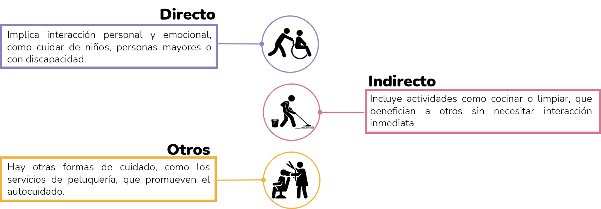
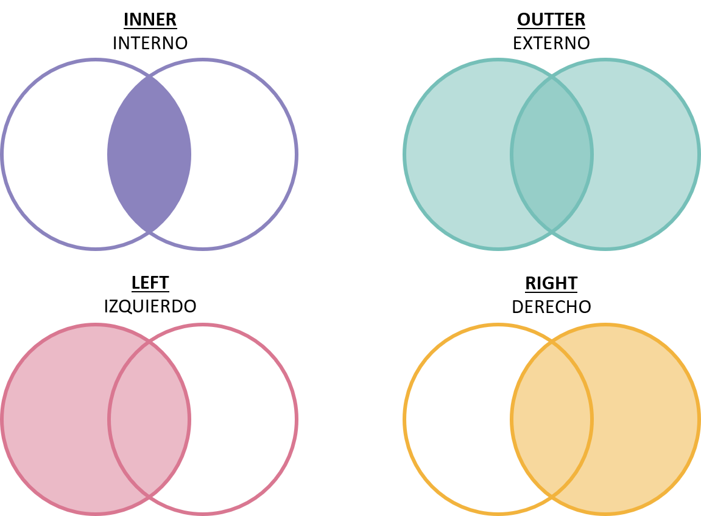

Módulo 3: Aplicaciones de análisis de datos en python a economía del cuidado
Te damos la bienvenida al Módulo 3. Nuestro último módulo.
En este módulo, te adentrarás en el contexto del cuidado en Colombia, explorando desde las nociones básicas hasta la creación y análisis de indicadores de cuidado. Utilizando datos de la Gran Encuesta Integrada de Hogares (GEIH), aprenderás a manejar información esencial sobre el cuidado y a aplicar técnicas de visualización espacial.
Abordarás conceptos básicos de cuidado, comprenderás la estructura y el uso de la GEIH, y utilizarás sus datos específicos para el análisis de cuidado. También te familiarizarás con los fundamentos de los sistemas de información geográfica (GIS), el uso de Divipola y el Marco Geoestadístico del DANE. Además, te introducirás a Geopandas, aprenderás a obtener y visualizar shapefiles, y a crear representaciones gráficas de mapas utilizando Python.
Este módulo está diseñado para proporcionarte una base sólida en el análisis y visualización espacial de datos de cuidado en Colombia. ¡Estamos emocionados de acompañarte en este viaje de aprendizaje!
Objetivo de aprendizaje:
Comprender el contexto del cuidado en Colombia, desde las nociones básicas hasta la construcción de diversos indicadores de cuidado y la visualización espacial de estos utilizando datos de la Gran Encuesta Integrada de Hogares (GEIH).
Contenidos:
- Nociones básicas de Cuidado.
- Nociones básicas de la Gran Encuesta Integrada de Hogares (GEIH).
- Uso de datos de la GEIH referentes a cuidado.
- Conceptos básicos de GIS.
- Divipola y Marco geoestadístico del DANE.
- Introducción a Geopandas.
- Obtener y visualizar shapefiles.
- Visualización gráfica de mapas en Python.
Material para el desarrollo de la sesión:
Para este módulo, tendrás acceso a tres Colab notebooks que se utilizarán a lo largo de la sesión. Estos notebooks están diseñados para guiarte a través de los temas clave, permitiéndote practicar con ejemplos y ejercicios específicos. El primer notebook se centra en el uso de pandas para realizar operaciones de merge, el segundo trabaja con datos de la Gran Encuesta Integrada de Hogares (GEIH), y el tercero se enfoca en la creación de mapas con Geopandas utilizando datos del censo. Asegúrate de tener acceso a Google Colab y una cuenta de Google para poder participar plenamente en las actividades y maximizar tu aprendizaje.
Links Colab Notebooks: sesión 3 y sesión 4
Además, te invitamos a revisar la presentación de la sesión 3, que proporciona una visión general de los conceptos clave de Cuidado y de la Gran Encuesta Integrada de Hogares (GEIH).
Links: Presentación de la sesión 3.
- Presentación de la sesión 3: Da click aquí para acceder a la presentación de la sesión 3.
Nociones básicas de Cuidado.
¿Qué se entiende por Cuidado?
El cuidado abarca un espectro amplio de actividades esenciales que sostienen la vida y promueven el bienestar tanto a nivel individual como comunitario. Este concepto engloba todas las labores destinadas a satisfacer las necesidades básicas físicas, emocionales y sociales de otros seres humanos (Herrera et al., 2020). Puede ser proporcionado en diversos contextos y por múltiples actores, incluyendo el Estado, el mercado, organizaciones no gubernamentales y los propios hogares. Esta diversidad de proveedores conforma lo que se denomina el "diamante de cuidado", un marco conceptual que subraya la interacción compleja entre estos actores en la provisión de cuidado (Razavi, 2007).
El cuidado puede ser proporcionado por diversos actores, como el Estado, el mercado, las organizaciones no gubernamentales y los hogares, formando lo que se ha denominado el “diamante de cuidado” (Razavi, 2007) .
El enfoque hacia el cuidado tiene profundas implicaciones sociales y económicas. En términos de igualdad de género, la distribución desigual de responsabilidades de cuidado ha perpetuado tradicionalmente roles restrictivos para las mujeres, limitando sus oportunidades económicas y sociales. Abordar estas disparidades no solo es crucial para promover la equidad de género, sino también para fortalecer el tejido social y avanzar hacia un desarrollo inclusivo y sostenible.
¿Cómo se clasifica el Cuidado?
El cuidado no se limita únicamente a la atención directa a personas necesitadas, como niños, personas mayores o con discapacidades, sino que también abarca actividades indirectas como la preparación de alimentos y la limpieza del hogar, que son fundamentales para garantizar un entorno adecuado y seguro para quienes dependen de este cuidado (Herrera et al., 2020). Además, puede diferenciarse entre cuidado remunerado, que implica recibir una compensación económica por estos servicios, y no remunerado, que se realiza sin compensación directa (Herrera-Idárraga, Hernández y Gélvez, 2020).
Dentro de este marco, el autocuidado juega un papel crucial como complemento al cuidado recibido de otros. Se entiende como la capacidad y responsabilidad individual para mantener y mejorar la salud física y emocional mediante acciones conscientes y deliberadas (WHO, 2022). Incluye actividades como el lavado, el vestido, la alimentación y la gestión de la propia salud, todas cruciales para la autonomía personal y el bienestar a largo plazo.
El autocuidado no solo varía según las capacidades individuales y los recursos disponibles, sino que también está influenciado por políticas públicas y el apoyo dentro del sistema de salud (Narasimhan, Allotey, y Hardon 2019), que pueden facilitar o limitar las opciones y accesibilidad a los servicios necesarios para llevar a cabo estas prácticas de cuidado personal.

¿Qué es la oferta de cuidado?
La oferta de cuidado se refiere a la disponibilidad y accesibilidad de servicios y recursos destinados a satisfacer las necesidades de cuidado de la población. Incluye tanto la provisión de cuidado directo a personas dependientes como la prestación de servicios de apoyo, como guarderías, centros de día y programas de asistencia social. La oferta de cuidado puede ser proporcionada por diversos actores, como el Estado, el sector privado, organizaciones no gubernamentales y los propios hogares, cada uno con un papel específico en la provisión de servicios de cuidado.
CUIDADO REMUNERADO
La clasificación de las actividades económicas del sector de cuidado remunerado en Colombia se basa en la Clasificación Industrial Internacional Uniforme (CIIU) revisión 4 (Herrera et al., 2020). De las 495 actividades a 4 dígitos, se seleccionaron 21 y se agruparon en cinco categorías principales: servicios de cuidado a grupos específicos (como niños, personas mayores y discapacitadas), salud humana y asistencia social (incluyendo hospitales y atención domiciliaria), servicio doméstico, servicios de comidas preparadas, lavado de ropa y peluquerías. Estas categorías se organizan en tres tipos de cuidado: directo (enfocado en servicios de cuidado personal y asistencia médica), indirecto (incluyendo labores domésticas como limpieza y preparación de alimentos), y otros (centrado en actividades de autocuidado como peluquerías). Esta clasificación permite una mejor comprensión y medición del trabajo de cuidado remunerado en el país.
Cuidado directo
El cuidado directo incluye servicios a grupos determinados y salud humana y asistencia social. Las actividades relacionadas con la educación abarcan la educación de la primera infancia (8511), educación preescolar (8512) y educación básica primaria (8513). Las actividades de atención residencial incluyen el cuidado de pacientes con enfermedades mentales y consumo de sustancias (8720), y la atención en instituciones para personas mayores y discapacitadas (8730). También se incluye la asistencia social sin alojamiento para personas mayores y discapacitadas (8810). En el ámbito de la salud humana, se consideran las actividades de hospitales y clínicas con internación (8610), la práctica médica sin internación (8621), el apoyo diagnóstico (8691), el apoyo terapéutico (8692), otras actividades de atención de la salud humana (8699), la atención residencial medicalizada de tipo general (8710), y otras actividades de atención en instituciones con alojamiento (8790), así como otras actividades de asistencia social sin alojamiento (8890).
Cuidado indirecto
El cuidado indirecto se compone de actividades relacionadas con el servicio doméstico y servicios de comidas preparadas. El servicio doméstico abarca las actividades de los hogares individuales como empleadores de personal doméstico (9700). Los servicios de comidas preparadas incluyen el expendio a la mesa (5611), el expendio por autoservicio (5612), el expendio en cafeterías (5613) y otros tipos de expendio de comidas preparadas no clasificados previamente (5619). Además, incluye el lavado y limpieza de productos textiles y de piel (9601).
Otros tipos de cuidado
En la categoría de otros cuidados, se encuentra la peluquería y otros tratamientos de belleza, clasificados bajo la actividad de peluquería y otros tratamientos de belleza (9602).
CUIDADO NO REMUNERADO
Para construir las cifras de actividades de cuidado no remuneradas, se dividen en tres áreas: actividades de cuidado indirecto, actividades de cuidado directo y otras actividades no remuneradas, principalmente relacionadas con labores domésticas. Las actividades de cuidado indirecto incluyen preparar alimentos, lavar platos y llevar alimentos, además de lavar, planchar, reparar y recoger ropa, limpiar la vivienda, cuidar el jardín, cuidar mascotas, limpiar el vehículo y realizar oficios en otros hogares. El cuidado directo se centra en dos áreas principales: cuidado de menores (niños de 14 años o menos) y cuidado de mayores (adultos de 60 años o más) e individuos con discapacidad, asegurando que las actividades correspondan a estas poblaciones dependientes. Por último, otras actividades no remuneradas abarcan el voluntariado en diferentes formas y otros servicios comunitarios, contabilizando el tiempo invertido en estas actividades tanto en horas como en minutos.
¿Qué es la demanda de cuidado?
La demanda de cuidado se refiere a la necesidad de servicios y recursos de cuidado por parte de la población. Esta demanda puede variar según factores como la edad, el género, la situación socioeconómica y el estado de salud de las personas, así como las dinámicas familiares y comunitarias. La demanda de cuidado puede ser influenciada por factores estructurales, como la disponibilidad de servicios de cuidado, la accesibilidad a estos servicios y las normas sociales y culturales que rigen la distribución de responsabilidades de cuidado en la sociedad.
La demanda de cuidado es un aspecto fundamental a considerar en el diseño de políticas y programas de cuidado, ya que permite identificar las necesidades de la población y orientar la provisión de servicios de cuidado de manera efectiva y equitativa. Comprender la demanda de cuidado es esencial para garantizar que los servicios y recursos de cuidado sean accesibles y adecuados para satisfacer las necesidades de la población de manera integral y equitativa.
Nociones básicas de la Gran Encuesta Integrada de Hogares (GEIH)
¿Qué es la Gran Encuesta Integrada de Hogares (GEIH)?
La Gran Encuesta Integrada de Hogares (GEIH) es una operación estadística del Departamento Administrativo Nacional de Estadística (DANE) de Colombia que recopila información sobre el mercado laboral, el ingreso, la pobreza y otros aspectos socioeconómicos de los hogares colombianos.
La GEIH es una fuente de datos valiosa para la investigación y la toma de decisiones en políticas públicas, ya que proporciona información detallada y actualizada sobre la situación socioeconómica de la población colombiana. Los datos de la GEIH se utilizan para calcular indicadores clave como la tasa de desempleo, la tasa de ocupación, la tasa de informalidad y la tasa de pobreza, que son fundamentales para comprender la dinámica del mercado laboral y la distribución del ingreso en el país.
Esta encuesta se basa en una muestra representativa de hogares colombianos y se recopila a través de entrevistas directas con los miembros de los hogares seleccionados. Los datos se recopilan mensualmente y se publican en informes mensuales y anuales, que están disponibles para el público en general a través del sitio web del DANE.
¿Qué es una muestra representativa?
Una muestra representativa es un subconjunto de una población mayor que refleja de manera precisa las características de esa población. Esta muestra se selecciona de tal forma que todos los segmentos relevantes de la población estén proporcionalmente representados, lo que permite que las conclusiones extraídas de la muestra se puedan generalizar al conjunto de la población con un alto grado de confianza.
Para asegurarse de que la muestra sea representativa, se elige a las personas de manera aleatoria. Esto significa que todos tienen la misma oportunidad de ser seleccionados. Existen varias formas de hacer esto: el muestreo aleatorio simple, el muestreo estratificado, el muestreo por conglomerados y el muestreo sistemático.
Una muestra representativa es esencial en estudios estadísticos, encuestas y experimentos porque asegura que los resultados y conclusiones obtenidos sean válidos y aplicables a la población completa.
¿Qué información proporciona la GEIH?
La GEIH proporciona información detallada sobre diversos aspectos socioeconómicos de los hogares colombianos, incluyendo:
- Características demográficas de los hogares, como tamaño, composición y estructura familiar.
- Características laborales de los miembros del hogar, como ocupación, sector de actividad, ingresos y condiciones de empleo.
- Condiciones de vida de los hogares, como acceso a servicios públicos, vivienda, educación y salud.
- Tiempos de algunas actividades: Oficios del hogar, voluntariado
Capítulos de la Gran Encuesta Integrada de Hogares
La GEIH se compone de varios capítulos que recopilan información sobre diferentes aspectos de la vida de los hogares colombianos. Algunos de los módulos más importantes de la GEIH son:
- Características generales, seguridad social en salud y educación
- Fuerza de trabajo
- Ocupados
- No ocupados
- Otras formas de trabajo
- Migración
- Otros ingresos e impuestos
- Datos del hogar y la vivienda
La GEIH proporciona datos tanto a nivel de hogar como a nivel individual (persona). Para poder combinar estos datos, generalmente se usan identificadores comunes en ambas bases de datos.
Identificación de las variables clave
Antes de fusionar las bases de datos, es importante identificar las variables clave que se utilizarán como identificadores comunes. Estas variables deben ser únicas y estar presentes en ambas bases de datos para poder realizar la fusión de manera efectiva.
Las bases de datos de hogares y personas suelen tener identificadores comunes que permiten emparejar las observaciones. En la GEIH, estos identificadores suelen ser:
- DIRECTORIO: Identificador único del hogar.
- SECUENCIA_P: Identificador único de la persona dentro del hogar.
- ORDEN: Número de orden del hogar.
¿Qué es el factor de expansión?
El factor de expansión en el contexto de encuestas como la Gran Encuesta Integrada de Hogares (GEIH) se refiere a un coeficiente que se aplica a los datos recolectados de una muestra representativa para extrapolar y estimar valores para toda la población objetivo.
En el caso específico de la GEIH, que es una encuesta que busca proporcionar información detallada sobre la situación socioeconómica de los hogares en un país (como Colombia), el factor de expansión se utiliza para escalar los resultados de la muestra a la población completa.
- Cálculo de indicadores poblacionales: Una vez que se recolectan los datos de la muestra (hogares encuestados), cada unidad (hogar) tiene asociado un factor de expansión que indica cuántos hogares en la población total representa. Multiplicando el número de hogares encuestados por su factor de expansión, se obtiene una estimación de cuántos hogares en total tienen características similares.
- Análisis y comparación:Con los datos ajustados mediante los factores de expansión, se pueden calcular y analizar diversos indicadores socioeconómicos a nivel poblacional, como ingresos promedio, tasas de desempleo, distribución de la riqueza, entre otros. Esto proporciona una visión más precisa y representativa de la situación de la población en general.
- Consideraciones: Es importante tener en cuenta que el factor de expansión se basa en supuestos y estimaciones, por lo que los resultados obtenidos a partir de él son aproximaciones y no valores exactos. Sin embargo, al aplicar correctamente los factores de expansión, se puede obtener una representación más precisa de la población objetivo y sus características.
El factor de expansión es una herramienta fundamental en la investigación y el análisis de datos provenientes de encuestas y estudios de muestra, ya que permite generalizar los resultados obtenidos de una muestra representativa a toda la población objetivo, proporcionando una visión más completa y detallada de la realidad socioeconómica de un país o región.
Nota aclaratoria uso de factor de expansión:
Cada una de las bases contiene un campo con el nombre "fex_c18" el cual almacena el factor de expansión mensual de cada registro. Este factor de expansión indica el número de personas que representa el entrevistado en la población.
El factor de expansión (fex_c18) se modifica de acuerdo con la información que se necesite:
- Datos mensuales no se deben hacer cambios (el factor es mensual).
- Datos trimestrales se debe dividir en 3.
- Datos semestrales se divide en 6.
- Información anual se divide en 12.
¿Qué es el Marco Geoestadístico del DANE?
El Marco Geoestadístico del DANE es una base de datos geográfica que contiene información detallada sobre la división político-administrativa de Colombia. Este marco proporciona datos geográficos precisos y actualizados sobre los municipios, departamentos y regiones del país, incluyendo información sobre su ubicación, extensión territorial, población y características socioeconómicas.
Se utiliza en diversas operaciones estadísticas y geográficas, como la generación de mapas, la elaboración de informes y la realización de análisis espaciales. Esta base de datos es fundamental para el análisis y la visualización de datos geográficos en Colombia, ya que proporciona una referencia estándar para la identificación y clasificación de las unidades territoriales del país.
El Marco Geoestadístico del DANE se actualiza periódicamente para reflejar los cambios en la división político-administrativa de Colombia, garantizando la precisión y la actualidad de los datos geográficos disponibles para los usuarios. Esta herramienta es esencial para la investigación, la planificación y la toma de decisiones en diversos campos, como la planificación urbana, la gestión de recursos naturales, la epidemiología y la agricultura.
Está constituido por áreas geoestadísticas (departamentos, municipios, cabeceras municipales, centros poblados, rural disperso, entre otras). Comprende: 1101 municipios del país, 20 áreas no municipalizadas y la isla de San Andrés.
Toda la información geoestadística de Colombia está regida y es publicada por el DANE. Para más detalles, consulta el manual del Marco Geoestadístico Nacional (MGN) en el Geovisor del DANE aquí.
División Político Administrativa (Divipola)
Divipola es el sistema de codificación de la división político-administrativa de Colombia, que asigna un código único a cada municipio y departamento del país. Este sistema es utilizado por el Departamento Administrativo Nacional de Estadística (DANE) para identificar y clasificar las unidades territoriales de Colombia, facilitando la organización y el análisis de datos geográficos y estadísticos.
El sistema Divipola se basa en una estructura jerárquica que consta de tres niveles: departamento, municipio y área no municipalizada. Cada nivel tiene un código único que permite identificar de manera precisa la ubicación geográfica de cada unidad territorial en el país. Estos códigos se utilizan en diversas operaciones estadísticas y geográficas, como la generación de mapas, la elaboración de informes y la realización de análisis espaciales.
El uso de Divipola es fundamental para el análisis y la visualización de datos geográficos en Colombia, ya que proporciona una estructura estandarizada para la identificación y clasificación de las unidades territoriales del país. Esta herramienta es ampliamente utilizada en investigaciones, estudios de mercado, planificación urbana y gestión de recursos naturales, entre otros campos.
Método Merge Pandas
El método merge de Pandas es una función que permite combinar dos DataFrames en función de una o varias columnas comunes. Esta función es útil para unir datos de diferentes fuentes y realizar análisis comparativos entre ellos. El método merge se basa en la operación de unión de bases de datos en SQL, permitiendo a los usuarios combinar datos de manera eficiente y flexible.
Este método se utiliza para realizar operaciones de unión de bases de datos, como la unión interna, la unión externa, la unión izquierda y la unión derecha. Estas operaciones permiten a los usuarios combinar datos de dos DataFrames en función de una o varias columnas comunes, creando un nuevo DataFrame que contiene la información combinada de ambos DataFrames.
- Unión interna: Combina solo las filas que tienen valores coincidentes en ambas tablas.
- Unión externa: Combina todas las filas de ambas tablas, rellenando los valores faltantes con NaN.
- Unión izquierda: Combina todas las filas de la tabla izquierda y las filas coincidentes de la tabla derecha.
- Unión derecha: Combina todas las filas de la tabla derecha y las filas coincidentes de la tabla izquierda.

El método merge de Pandas es una herramienta poderosa para combinar y analizar datos de diferentes fuentes, permitiendo a los usuarios realizar operaciones de unión de bases de datos de manera eficiente y flexible. Esta función es fundamental para la limpieza, transformación y análisis de datos en Python, ya que facilita la integración de información de múltiples fuentes en un único DataFrame.
Para más detalles sobre el método merge de Pandas, consulta la documentación oficial de Pandas aquí.
Visualización Espacial y Sistemas de Información Geográfica (GIS)
¿Qué es la visualización espacial?
La visualización espacial es una técnica que permite representar datos geográficos y espaciales de forma gráfica, facilitando la interpretación y el análisis de patrones y tendencias en los datos. Esta técnica es fundamental para comprender la distribución geográfica de los fenómenos y para identificar relaciones espaciales entre diferentes variables.
¿Qué es un Sistema de Información Geográfica (GIS)?
Un Sistema de Información Geográfica (GIS) es una herramienta que permite capturar, almacenar, analizar y visualizar datos geográficos y espaciales. Los GIS integran datos geográficos con información tabular, permitiendo a los usuarios visualizar, analizar y comprender la relación entre los datos geográficos y las variables asociadas a ellos.
Los GIS se utilizan en una amplia variedad de campos, como la planificación urbana, la gestión de recursos naturales, la epidemiología, la agricultura, la geología y la climatología, entre otros. Estas herramientas son fundamentales para la toma de decisiones informadas y la planificación estratégica, ya que permiten a los usuarios visualizar y analizar datos complejos de manera intuitiva y efectiva.
En el contexto de la economía del cuidado, los GIS son una herramienta poderosa para visualizar y analizar la distribución geográfica de los servicios de cuidado, identificar áreas con necesidades insatisfechas de cuidado y evaluar la accesibilidad a los servicios de cuidado en diferentes regiones. Estas herramientas son fundamentales para comprender la dinámica del cuidado en un contexto espacial y para diseñar políticas y programas que aborden las necesidades de cuidado de la población de manera efectiva.
¿Qué es Geopandas?
Geopandas es una librería de Python que facilita la manipulación y visualización de datos geoespaciales. Esta librería combina las funcionalidades de las librerías Pandas y Shapely, permitiendo a los usuarios trabajar con datos tabulares y geoespaciales de manera integrada.
Geopandas proporciona una interfaz sencilla y eficiente para leer, escribir, analizar y visualizar datos geoespaciales en Python. Permite a los usuarios realizar operaciones comunes en datos geoespaciales, como la creación de mapas, la superposición de capas, la selección de datos y la generación de estadísticas espaciales, de forma rápida y sencilla.
Esta librería es ampliamente utilizada en diversos campos, como la geografía, la planificación urbana, la gestión de recursos naturales, la epidemiología y la agricultura, entre otros. Geopandas es una herramienta poderosa para el análisis y la visualización de datos geoespaciales en Python, que permite a los usuarios explorar y comprender la distribución geográfica de los fenómenos de interés de manera efectiva.
Para más detalles sobre Geopandas, consulta la documentación oficial de Geopandas aquí.
Referencias
Arango Gaviria, L. G., & Pineda Duque, J. A. (2012). Género, trabajo y desigualdades sociales en peluquerías y salones de belleza de Bogotá. CS, (10), 93-129. https://doi.org/10.18046/recs.i10.1356
Hernández-Bonilla, H. M., Herrera-Idárraga, P., & Quevedo Rocha, I. K. (2022). Infraestructura física del cuidado en Colombia: una aproximación cuantitativa a la relación entre el acceso al agua y el uso del tiempo. https://cuidadoygenero.org/wp-content/uploads/2022/05/Infraestructura-cuidado.pdf
Herrera-Idárraga, P., Hernández y Gélvez (2020). Cuidado en Colombia: contexto y perspectivas. Quanta - Cuidado y Género.https://cuidadoygenero.org/wp-content/uploads/2021/03/Cuidado-en-Colombia.pdf
McKinney, W. (2010). Data Structures for Statistical Computing in Python. In S. van der Walt & J. Millman (Eds.), Proceedings of the 9th Python in Science Conference (pp. 56–61). https://doi.org/10.1136/bmj.l688
McKinney, W. (2022). Python for data analysis: Data wrangling with Pandas, NumPy, and IPython. O'Reilly Media, Inc. https://wesmckinney.com/book/
Narasimhan, Manjulaa, Pascale Allotey, & Anita Hardon. 2019. “Self Care Interventions to Advance Health and Wellbeing: A Conceptual Framework to Inform Normative Guidance”. BMJ: l688. https://doi.org/10.1007/978-1-4842-3913-1
Razavi, S. (2007). The political and social economy of care in a development context: Conceptual issues, research questions and policy options. https://repositorio.unal.edu.co/handle/unal/47163
World Health Organization. (2022). WHO guideline on self-care interventions for health and well-being, 2022 revision. World Health Organization. https://iris.who.int/handle/10665/357828